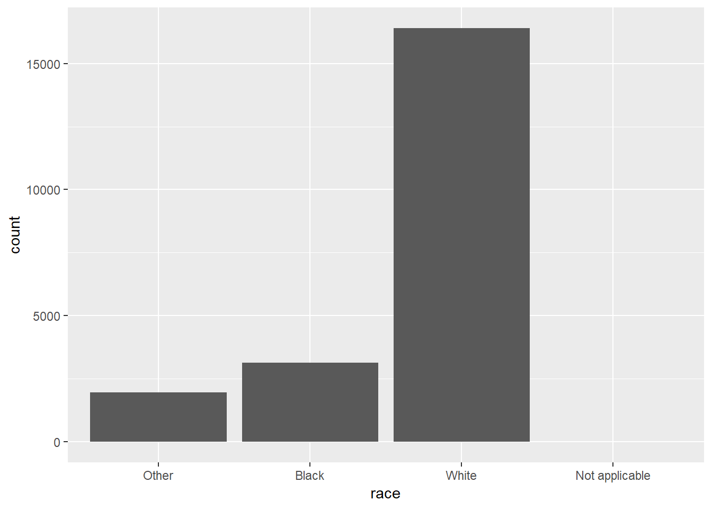
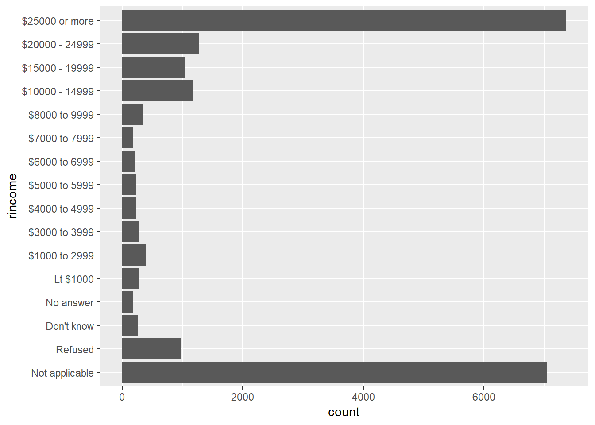
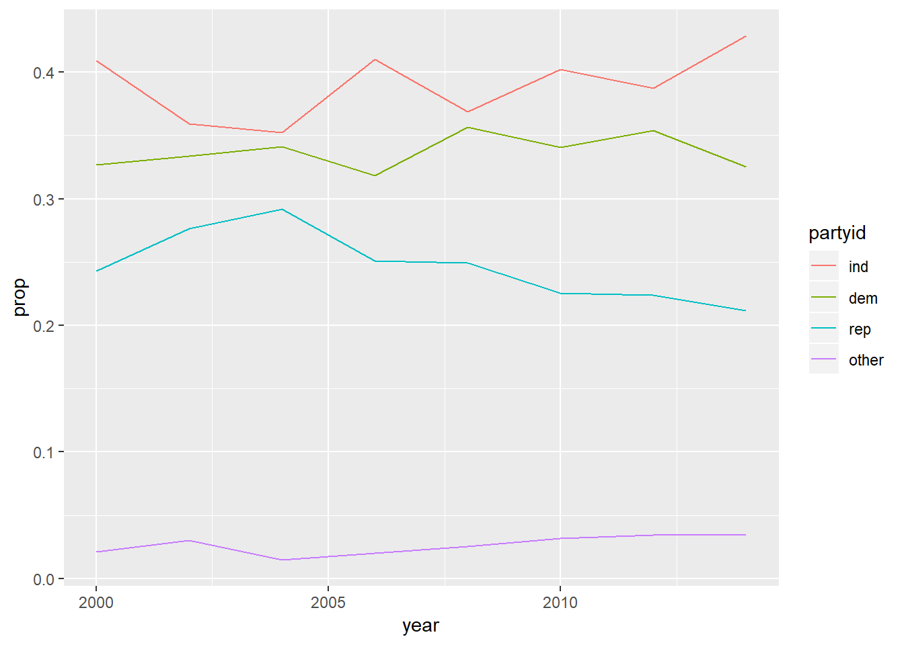

Chapter 13 ch. 15: Factors
factormake variable a factor based onlevelsprovidedfct_revreverses order of factorsfct_infreqorders levels in increasing frequencyfct_relevellets you move levels to front of orderfct_inorderorders existing factor by order values show-up in in datafct_reorderorders input factors by other specified variables value (median by default), 3 inputs:f: factor to modify,x: input var to order by,fun: function to use on x, also havedescoptionfct_reorder2orders input factor by max of other specified variable (good for making legends align as expected)fct_recodelets you change value of each levelfct_collapseis variant offct_recodethat allows you to provide multiple old levels as a vectorfct_lumpallows you to lump together small groups, usento specify number of groups to end with
Create factors by order they come-in:
Avoiding dropping levels with drop = FALSE

13.1 15.4: Modifying factor order
Example with fct_recode
gss_cat %>%
mutate(partyid = fct_recode(partyid,
"Republican, strong" = "Strong republican",
"Republican, weak" = "Not str republican",
"Independent, near rep" = "Ind,near rep",
"Independent, near dem" = "Ind,near dem",
"Democrat, weak" = "Not str democrat",
"Democrat, strong" = "Strong democrat"
)) %>%
count(partyid)## # A tibble: 10 x 2
## partyid n
## <fct> <int>
## 1 No answer 154
## 2 Don't know 1
## 3 Other party 393
## 4 Republican, strong 2314
## 5 Republican, weak 3032
## 6 Independent, near rep 1791
## 7 Independent 4119
## 8 Independent, near dem 2499
## 9 Democrat, weak 3690
## 10 Democrat, strong 349013.1.1 15.3.1
Explore the distribution of
rincome(reported income). What makes the default bar chart hard to understand? How could you improve the plot?
- Default bar chart has categories across the x-asix, I flipped these to be across the y-axis
- Also, have highest values at the bottom rather than at the top and have different version of NA showing-up at both top and bottom, all should be on one side
- In
bar_prep, I used reg expressions to extract the numeric values, arrange by that, and then set factor levels according to the new order- Solution is probably unnecessarily complicated…25
bar_prep <- gss_cat %>% tidyr::extract(col = rincome, into =c("dollars1", "dollars2"), "([0-9]+)[^0-9]*([0-9]*)", remove = FALSE) %>% mutate_at(c("dollars1", "dollars2"), ~ifelse(is.na(.) | . == "", 0, as.numeric(.))) %>% arrange(dollars1, dollars2) %>% mutate(rincome = fct_inorder(rincome)) bar_prep %>% ggplot(aes(x = rincome)) + geom_bar() + scale_x_discrete(drop = FALSE) + coord_flip()
What is the most common
religin this survey? What’s the most commonpartyid?## # A tibble: 15 x 2 ## relig n ## <fct> <int> ## 1 Protestant 10846 ## 2 Catholic 5124 ## 3 None 3523 ## 4 Christian 689 ## 5 Jewish 388 ## 6 Other 224 ## 7 Buddhism 147 ## 8 Inter-nondenominational 109 ## 9 Moslem/islam 104 ## 10 Orthodox-christian 95 ## 11 No answer 93 ## 12 Hinduism 71 ## 13 Other eastern 32 ## 14 Native american 23 ## 15 Don't know 15## # A tibble: 10 x 2 ## partyid n ## <fct> <int> ## 1 Independent 4119 ## 2 Not str democrat 3690 ## 3 Strong democrat 3490 ## 4 Not str republican 3032 ## 5 Ind,near dem 2499 ## 6 Strong republican 2314 ## 7 Ind,near rep 1791 ## 8 Other party 393 ## 9 No answer 154 ## 10 Don't know 1religmost common – Protestant, 10846,partyidmost common – Independent, 4119
Which
religdoesdenom(denomination) apply to? How can you find out with a table? How can you find out with a visualisation?With visualization:

- Notice which have the widest variety of colours – are protestant, and Christian slightly
With table:
## # A tibble: 15 x 2 ## relig n ## <fct> <int> ## 1 Protestant 29 ## 2 Christian 4 ## 3 Other 2 ## 4 No answer 1 ## 5 Don't know 1 ## 6 Inter-nondenominational 1 ## 7 Native american 1 ## 8 Orthodox-christian 1 ## 9 Moslem/islam 1 ## 10 Other eastern 1 ## 11 Hinduism 1 ## 12 Buddhism 1 ## 13 None 1 ## 14 Jewish 1 ## 15 Catholic 1
13.2 15.4: Modifying factor order
13.2.1 15.4.1
There are some suspiciously high numbers in
tvhours. Is the mean a good summary?
- Distribution is reasonably skewed with some values showing-up as 24 hours which seems impossible, in addition to this we have a lot of na values, this may skew results
- Given high number of missing values,
tvhoursmay also just not be reliable, do NA’s associate with other variables? – Perhaps could try and impute these NAs
For each factor in
gss_catidentify whether the order of the levels is arbitrary or principled.## $marital ## [1] "No answer" "Never married" "Separated" "Divorced" ## [5] "Widowed" "Married" ## ## $race ## [1] "Other" "Black" "White" "Not applicable" ## ## $rincome ## [1] "No answer" "Don't know" "Refused" "$25000 or more" ## [5] "$20000 - 24999" "$15000 - 19999" "$10000 - 14999" "$8000 to 9999" ## [9] "$7000 to 7999" "$6000 to 6999" "$5000 to 5999" "$4000 to 4999" ## [13] "$3000 to 3999" "$1000 to 2999" "Lt $1000" "Not applicable" ## ## $partyid ## [1] "No answer" "Don't know" "Other party" ## [4] "Strong republican" "Not str republican" "Ind,near rep" ## [7] "Independent" "Ind,near dem" "Not str democrat" ## [10] "Strong democrat" ## ## $relig ## [1] "No answer" "Don't know" ## [3] "Inter-nondenominational" "Native american" ## [5] "Christian" "Orthodox-christian" ## [7] "Moslem/islam" "Other eastern" ## [9] "Hinduism" "Buddhism" ## [11] "Other" "None" ## [13] "Jewish" "Catholic" ## [15] "Protestant" "Not applicable" ## ## $denom ## [1] "No answer" "Don't know" "No denomination" ## [4] "Other" "Episcopal" "Presbyterian-dk wh" ## [7] "Presbyterian, merged" "Other presbyterian" "United pres ch in us" ## [10] "Presbyterian c in us" "Lutheran-dk which" "Evangelical luth" ## [13] "Other lutheran" "Wi evan luth synod" "Lutheran-mo synod" ## [16] "Luth ch in america" "Am lutheran" "Methodist-dk which" ## [19] "Other methodist" "United methodist" "Afr meth ep zion" ## [22] "Afr meth episcopal" "Baptist-dk which" "Other baptists" ## [25] "Southern baptist" "Nat bapt conv usa" "Nat bapt conv of am" ## [28] "Am bapt ch in usa" "Am baptist asso" "Not applicable"rincomeis principaled, rest are arbitrary
Why did moving “Not applicable” to the front of the levels move it to the bottom of the plot?
- Becuase is moving this factor to be first in order
13.3 15.5: Modifying factor levels
13.3.1 15.5.1
How have the proportions of people identifying as Democrat, Republican, and Independent changed over time?
As a line plot:
gss_cat %>% mutate(partyid = fct_collapse( partyid, other = c("No answer", "Don't know", "Other party"), rep = c("Strong republican", "Not str republican"), ind = c("Ind,near rep", "Independent", "Ind,near dem"), dem = c("Not str democrat", "Strong democrat") )) %>% count(year, partyid) %>% group_by(year) %>% mutate(prop = n / sum(n)) %>% ungroup() %>% ggplot(aes( x = year, y = prop, colour = fct_reorder2(partyid, year, prop) )) + geom_line() + labs(colour = "partyid")
As a bar plot:
gss_cat %>% mutate(partyid = fct_collapse( partyid, other = c("No answer", "Don't know", "Other party"), rep = c("Strong republican", "Not str republican"), ind = c("Ind,near rep", "Independent", "Ind,near dem"), dem = c("Not str democrat", "Strong democrat") )) %>% count(year, partyid) %>% group_by(year) %>% mutate(prop = n / sum(n)) %>% ungroup() %>% ggplot(aes( x = year, y = prop, fill = fct_reorder2(partyid, year, prop) )) + geom_col() + labs(colour = "partyid")
- Suggests proportion of republicans has gone down with independents and other going up.
How could you collapse
rincomeinto a small set of categories?other = c("No answer", "Don't know", "Refused", "Not applicable") high = c("$25000 or more", "$20000 - 24999", "$15000 - 19999", "$10000 - 14999") med = c("$8000 to 9999", "$7000 to 7999", "$6000 to 6999", "$5000 to 5999") low = c("$4000 to 4999", "$3000 to 3999", "$1000 to 2999", "Lt $1000") mutate(gss_cat, rincome = fct_collapse( rincome, other = other, high = high, med = med, low = low )) %>% count(rincome)## # A tibble: 4 x 2 ## rincome n ## <fct> <int> ## 1 other 8468 ## 2 high 10862 ## 3 med 970 ## 4 low 1183
Also had issue with not rendering for book.↩